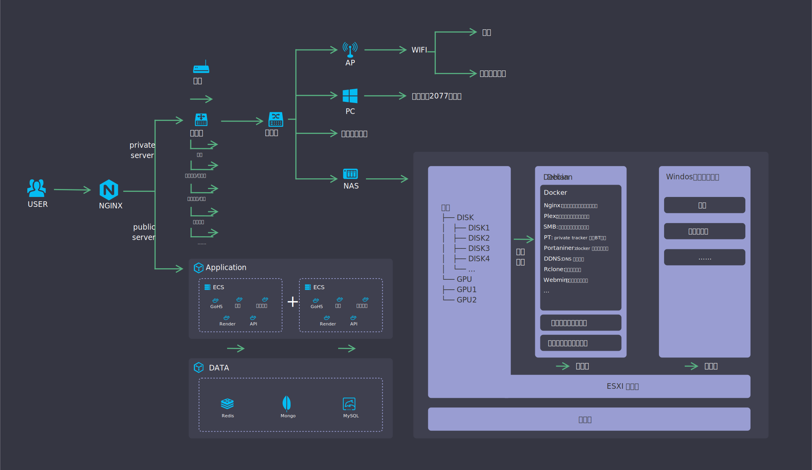
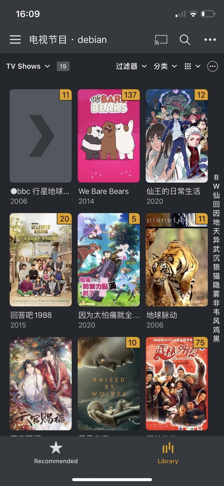
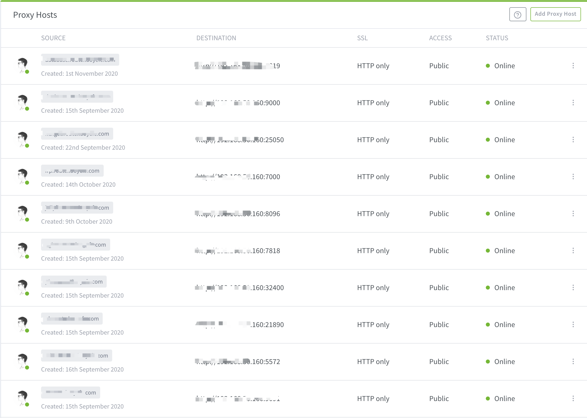
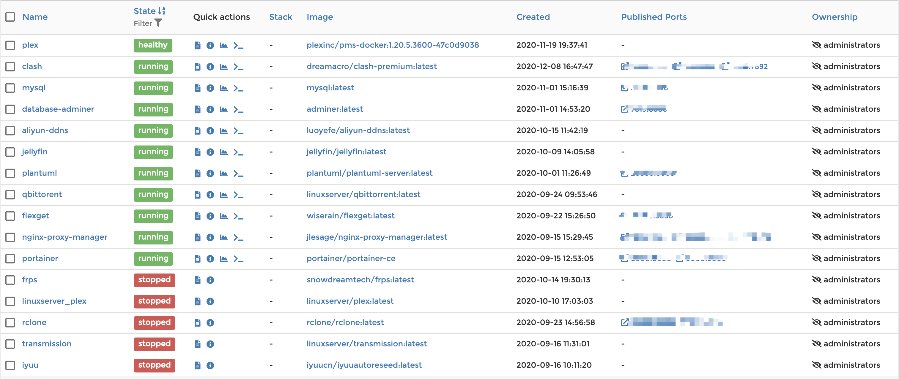

折腾折腾家庭网络架构
先上图
全屏，放大，看细节

来吧，展示
goh5：太老，不展示了
喝水提醒：非节假日早九到晚九提醒喝水
plex：家庭影音、照片等媒体资源管理工具

Nginx：端口转发，反代内网服务，允许外网通过域名的 80/443 端口访问内网服务

Portaniner: Docker 容器管理

细节
域名
域名备案不复杂，阿里云现在的备案流程大概一个星期即可
SSL 证书
各云厂商免费的证书（需一年重新生成一次，麻烦）
https://cheapsslsecurity.com/ 按需购买全球最便宜的 SSL 证书
VPS
推荐度从上到下
- 各厂商的新手服务器
- 阿里云国际版机器
- 阿里云
负载均衡
云厂商负载均衡产品或者自建 nginx，我是买了一台 1H0.5G 的超低配 ECS 自建 nginx。
软路由
路由分硬路由和软路由，硬路由就是传统路由器，tplink、华硕、网件等等，常用功能完备，但是性能较弱，溢价较高，可玩性太低。
如果你爱折腾，并且希望家庭内网免工具科学上网、无广告，并且联网设备较多，并且带宽高于100M（小水管就放弃吧），快上软路由！
软路由其实就是一台多网口的服务器，你可以选择 厂商准系统 > 自建 > NUC 工控机 > 老电脑 + pcie 多网口网卡。
软路由系统，openwrt/lede 都试试，找个你喜欢的。
科学上网，自己摸索吧~
去广告，软路由系统都带。
交换机
千兆POE交换机。
AP
装修的时候，吊顶走一根网线！！！AP直接吸顶放在全家中央，哪里都是信号满格，没到多层别墅或者大平层的兄弟不要折腾无线漫游，坑死。
NAS（重点！！！）
NAS 选购
- 您有钱嘛？-> 群晖
- 性价比高，不喜欢折腾？-> 威联通
- 轻量使用（无影音解码、无挂机下载、无远程桌面） -> 树莓派、成品 NUC 工控机
- 常规使用（低功耗、高性能、大容量）-> 自建（后叙详情）
- 重度使用 -> 2U服务器 + 机架（芜湖起飞，没涉及的领域，大佬走好）
常规使用自建NAS：
总则：低功耗、高性能、大容量，具体硬件型号就不推荐了额~
- CPU：别选AMD，TDP太高，稳定性堪忧；选新不选旧，10100 比 8100 强了何止2代的差距；
- 主板：sata 口 >= 6；支持所选U的入门款；
- 内存：需要虚拟化 windows 的话至少 16G，其他 8G 足够
- 硬盘：单盘越大越好；5400转速，噪音低；
- 显卡：CPU 集显已经足够硬解2k视频，如需要更高的 gpu 能力可以加
- 其他：电源、散热、机箱看着办吧
NAS 数据
家庭使用不推荐任何阵列！！！
阵列对硬盘要求很高，长时间的恢复过程有大量的读写，极有可能对硬盘造成二次伤害，阵列卡同理。
最推荐的做法，重要数据定时、定条件冷备。**非要阵列可以选选择 snapraid，需要一块容量大于任意一块数据盘的校验盘，恢复数据时，只用唤醒校验盘，不会对其他数据盘造成二次伤害。
NAS 系统
太多了，freenas、unraid、unas、openmediavault 等等，但是如果你有基本的服务器知识，推荐使用原生 linux 系统。大部分的 nas 系统只是提供了一套UI外加数据池、阵列等能力，却带来了很多非标 linux 的问题，深入使用发生问题难以排查，所以我选择 debian 作为 nas 系统。
其他
家庭宽带怎么获取公网IP？
电话宽带服务商，将光猫改为桥接模式，自行在路由器上拨号，即可获取公网IP。
实在没有公网IP怎么办？
在有公网IP的 vps 上部署 frp 内网穿透服务，使用 frp 访问家庭内网
家庭带宽要多大？怎么办最便宜？
提速降费说了这么多年了，百兆时代该过去了，千兆你好（现在精装的新房已经超六类网线，支持万兆网速）。
办宽带？上闲鱼！千兆电信只要999！
外网如何不带端口号，直接通过域名访问内网服务？
- 通过 DDNS，把域名（比如 *.home.example.com）解析到家内的公网 IP
- 此时路由器做端口转发，通过 xx.home.example.com:port 已经可以访问内网服务
- 公网 nginx 代理 .route.example.com 到 .home.example.com 的开放端口（比如 10080）
- 路由器转发开放端口（比如 10080）到内网 nginx 服务端口（比如 80）
- 内网 nginx 反代具体域名到相应端口，比如 xx.route.example.com 到 192.168.1.111:8080
- 此时通过 xx.route.example.com 可以直接访问内网服务
相当于在内网的 nginx 做 dns 解析服务，把 .route.example.com 的 ，具体解析到 xx